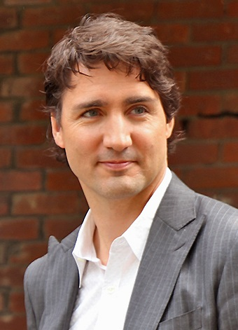
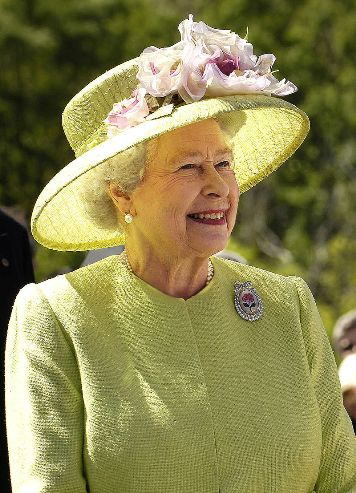

Politika Kanade
 Kanada je ustavna monarhija s kraljicom Elizabetom II. kao državnim poglavarom (od 6. veljače 1952.). Nju predstavlja generalni guverner David LloydJohnston (od 1. listopada 2010.). Kanada je također i konfederacija s parlamentarnom demokracijom.
Predsjednik Vlade je od 4. studenog 2015. JustinTrudeau, vođa Liberalne stranke. Premijersko mjesto pripada lideru stranke koji može održati povjerenje u Kanadskom parlamentu. Vladu čine Federalna ministarstva koje bira premijer među članovima svoje stranke koje su zastupljene u Parlamentu. Vladu formalno potvrđuje generalni guverner. Izvršna vlast je u rukama premijera i vlade. Kanadski federalni parlament kao zakonodavna vlast sastoji se od tri dijela: kraljice odnosno generalnog guvernera koji ju predstavlja, Senata i Parlamenta. Guverner, na prijedlog kanadskog premijera imenuje 105 zastupnika u Senat. 308 članova Parlamenta izabiru direktno građani na izborima. Svaki zastupnik se izabire u jednom izbornom okrugu.
Glavne političke stranke u Kanadi su: Konzervativna stranka (spoj Kanadske alijanse i Napredne konzervativne stranke, vođa RonaAmbrose), Liberalna stranka (vođa JustinTrudeau), Nova demokratska stranka (vođa Tom Mulcair), BlocQuébécois (vođa RhéalFortin) i Zelena stranka (vođa Elizabeth May).